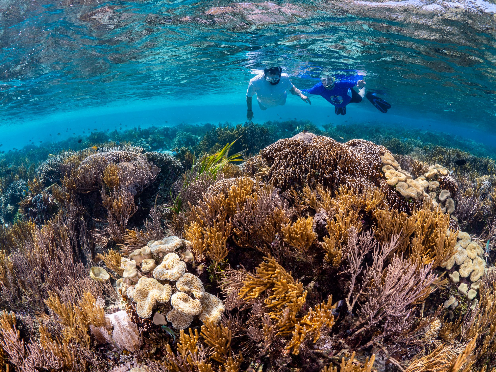
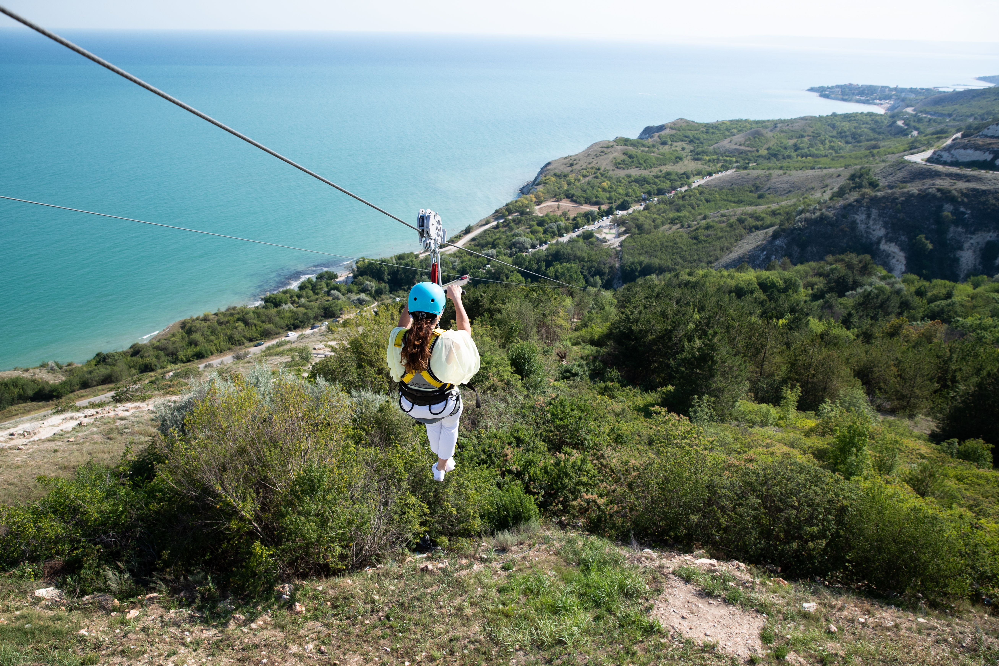
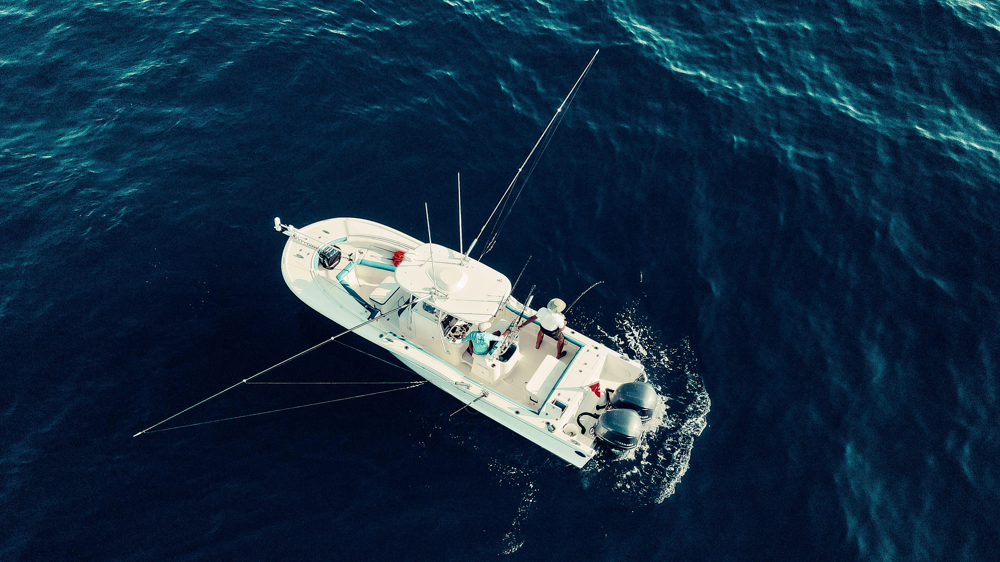

Beaches
Relax on sandy beaches near Yellow Leaf Bay and enjoy the island coastline.
Explore beaches, rainforests, volcanoes, tours, and island entertainment.
Relax on sandy beaches near Yellow Leaf Bay and enjoy the island coastline.

Explore lush rainforest trails and experience Taniti's tropical scenery.

Visit Taniti's mountainous interior and see the island's active volcano.

Discover ocean views and underwater experiences around the island.

Enjoy a rainforest adventure with zip-lining experiences in Taniti.
See Taniti from above with scenic helicopter rides over the island.

Join a chartered fishing tour and experience one of Taniti's traditional industries.
Learn about Taniti's culture and history at the local history museum.